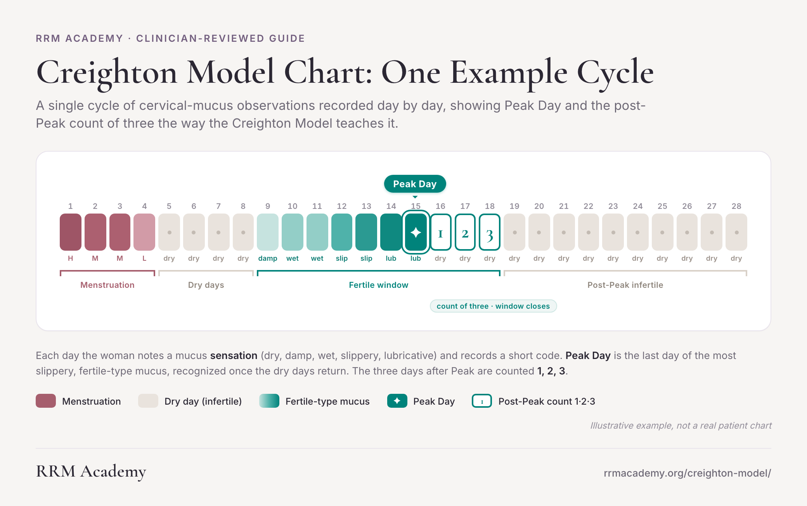
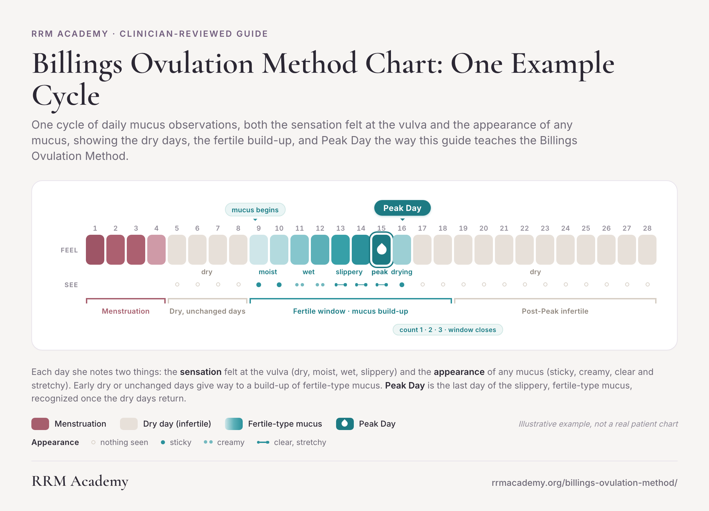
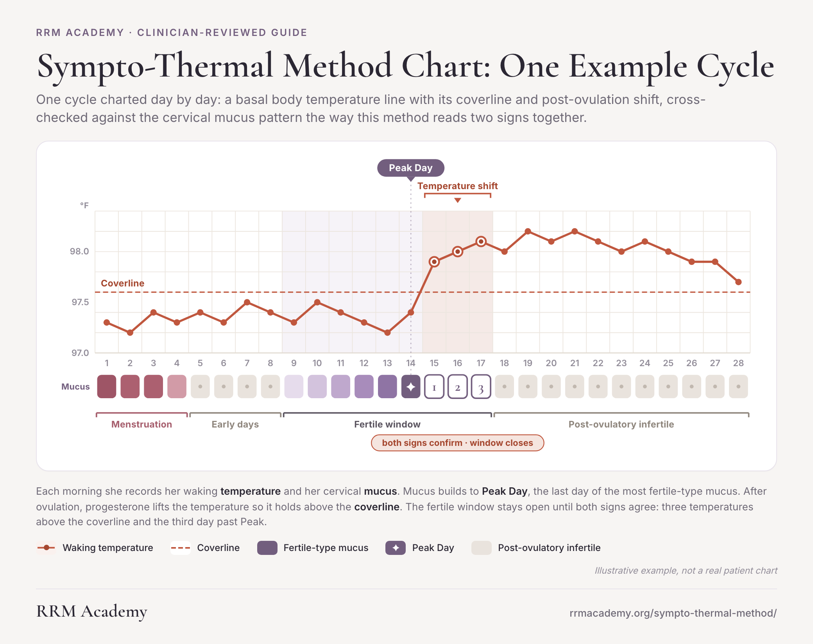
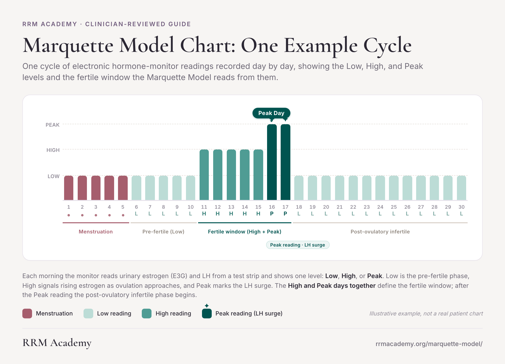
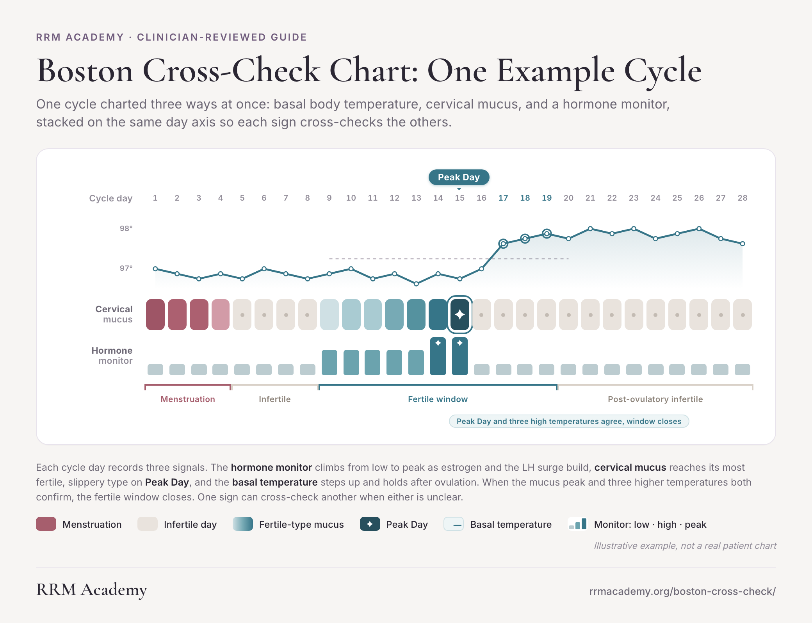
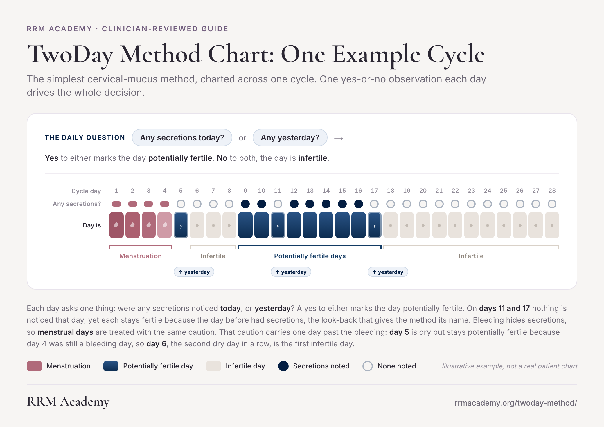
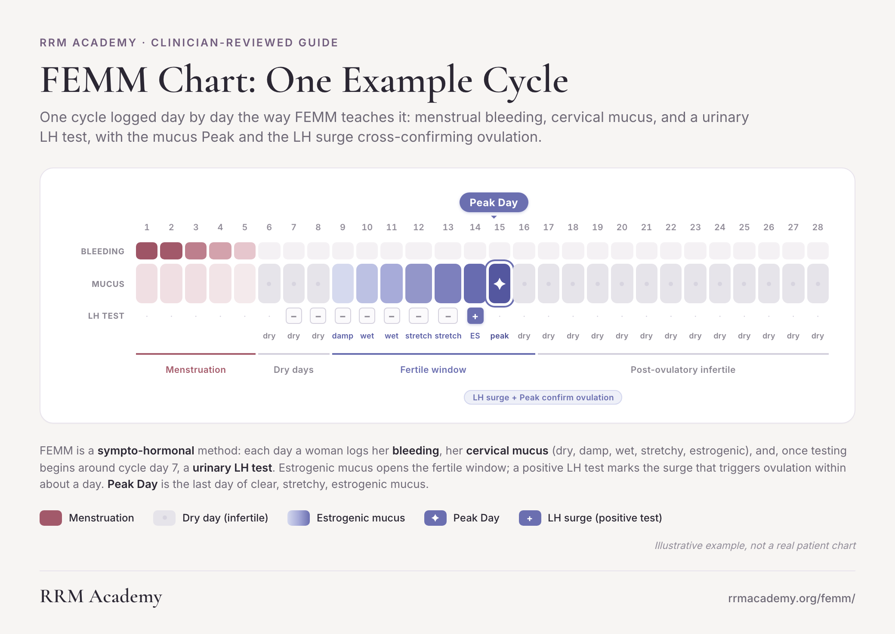

These graphics are staged for review only. Nothing here is live.

| Page | https://rrmacademy.org/creighton-model/ |
|---|---|
| Dimensions | 2080 x 1308px |
| Accent | #00837b |
| Proposed alt text | Creighton Model chart example: a 28-day cycle showing daily mucus codes, Peak Day, and the three-day post-Peak count. |
| Proposed figcaption | This illustrative example charts one cycle in Creighton Model notation: daily mucus codes, a marked Peak Day, and the three days counted after it. A trained FertilityCare Practitioner teaches you to read your own chart. |
| Reviewer notes |
|

| Page | https://rrmacademy.org/billings-ovulation-method/ |
|---|---|
| Dimensions | 2080 x 1502px |
| Accent | #2B919B |
| Proposed alt text | Billings Ovulation Method chart example showing daily mucus sensation and appearance observations, with Peak Day marked. |
| Proposed figcaption | This illustrative example charts one cycle in Billings Ovulation Method notation, recording both the feel and the appearance of mucus each day and marking Peak Day. A trained Billings teacher helps you learn to read your own chart. |
| Reviewer notes |
|

| Page | https://rrmacademy.org/sympto-thermal-method/ |
|---|---|
| Dimensions | 1040 x 824px |
| Accent | #C0573E |
| Proposed alt text | Sympto-Thermal Method chart example combining a basal body temperature curve with mucus observations to show Peak Day. |
| Proposed figcaption | This illustrative example pairs a waking temperature curve with daily mucus observations, the two signs this method combines. A trained instructor teaches you to interpret your own combined chart. |
| Reviewer notes |
|

| Page | https://rrmacademy.org/marquette-model/ |
|---|---|
| Dimensions | 2080 x 1500px |
| Accent | #005450 |
| Proposed alt text | Marquette Model chart example showing one cycle of hormone monitor readings across Low, High, and Peak fertility levels. |
| Proposed figcaption | This illustrative example charts one cycle of electronic hormone monitor readings in Marquette Model notation, moving from Low through High to Peak across the fertile window. A trained Marquette instructor teaches you to interpret your own monitor readings. |
| Reviewer notes |
|

| Page | https://rrmacademy.org/boston-cross-check/ |
|---|---|
| Dimensions | 1040 x 798px |
| Accent | #367588 |
| Proposed alt text | Boston Cross-Check chart example showing one cycle charted with temperature, cervical mucus, and hormone monitor readings together. |
| Proposed figcaption | This illustrative example charts one cycle three ways at once: temperature, mucus, and hormone monitor readings, the cross-checking approach at the center of this method. A trained instructor teaches you to read your own combined chart. |
| Reviewer notes |
|

| Page | https://rrmacademy.org/twoday-method/ |
|---|---|
| Dimensions | 2080 x 1472px |
| Accent | #725e7e |
| Proposed alt text | TwoDay Method chart example showing one cycle of daily secretion observations marking potentially fertile and infertile days. |
| Proposed figcaption | This illustrative example charts one cycle in TwoDay Method notation, where a single daily secretion observation, checked against the day before, marks each day fertile or infertile. A trained instructor teaches you to apply the same check to your own cycle. |
| Reviewer notes |
|

| Page | https://rrmacademy.org/femm/ |
|---|---|
| Dimensions | 2080 x 1476px |
| Accent | #9396C9 |
| Proposed alt text | FEMM chart example showing one cycle with daily mucus observations, an LH test result row, and a marked Peak Day. |
| Proposed figcaption | This illustrative example charts one cycle in FEMM notation, pairing daily mucus observations with LH test results to mark Peak Day. A trained FEMM instructor teaches you to read and apply your own chart. |
| Reviewer notes |
|